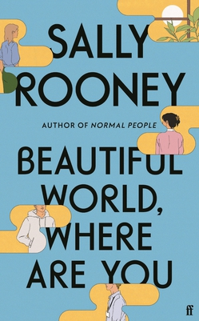
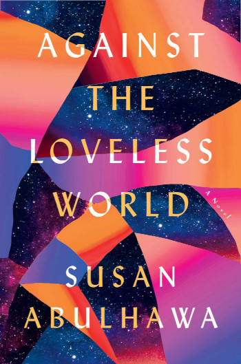
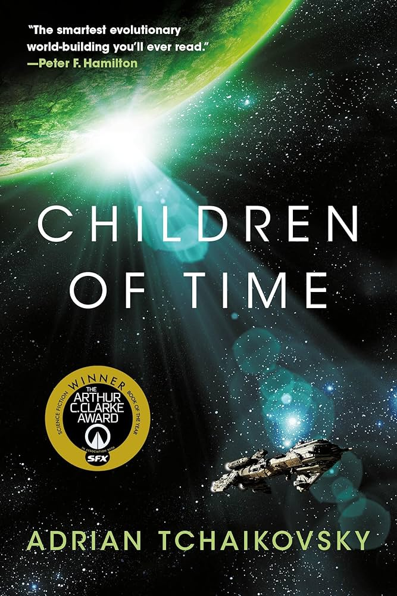
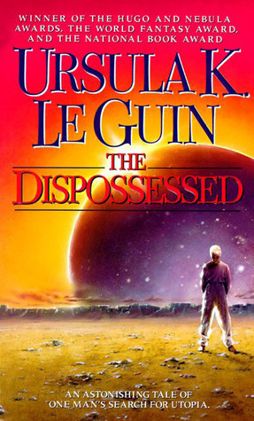
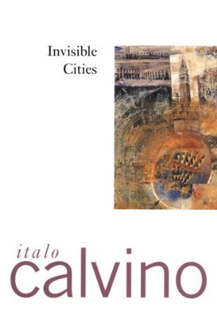
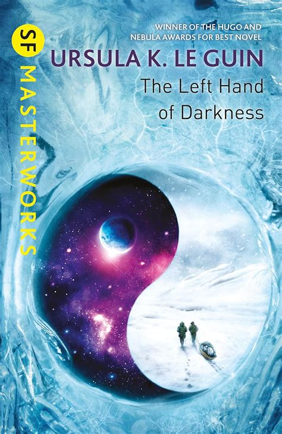
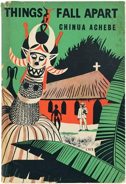

Fiction Recommendations
The greatest books of all time!!! (According to me)
- Work in progress…
- Click on a Tag to filter the list!
- Novels only.
Adrian Tchaikovsky - Alien Clay
Year: 2024
Country: 🇬🇧 United Kingdom
Genres: Science Fiction
Verdict: ❤️
R. F. Kuang - Babel, or The Necessity of Violence: An Arcane History of the Oxford Translators’ Revolution
Year: 2022
Country: 🇬🇧 United Kingdom
Genres: Fantasy, Alternative History
Verdict: ❤️❤️
Kazuo Ishiguo - Klara and the Sun
Year: 2022
Country: 🇬🇧 United Kingdom
Genres: Science Fiction
Verdict: ❤️
Sally Rooney - Beautiful World, Where Are You

Year: 2021
Country: 🇮🇪 Ireland
Genres: Contemporary Fiction
Verdict: ❤️
Scott Sigler - Aliens: Phalanx
Year: 2020
Country: 🇺🇸 United States
Genres: Science Fiction, Horror
Verdict: ❤️
Susan Abulhawa - Against the Loveless World

Year: 2019
Country: 🇬🇧 United Kingdom
Genres: Literary Fiction
Verdict: ❤️
Adrian Tchaikovsky - Children of Time

Year: 2015
Country: 🇬🇧 United Kingdom
Genres: Science Fiction
Verdict: ❤️🔥❤️🔥❤️🔥
Elif Shafak - Honour
Year: 2012
Country: 🇹🇷 Turkey
Genres: Literary Fiction
Verdict: ❤️
Joseph Boyden - Three Day Road
Year: 2005
Country: 🇨🇦 Canada
Genres: Historical Fiction, War
Verdict: ❤️
China Miéville - The Scar
Year: 2004
Country: 🇬🇧 United Kingdom
Genres: New Weird
Verdict: ❤️🔥❤️🔥❤️🔥
China Miéville - Perdido Street Station
Year: 2000
Country: 🇬🇧 United Kingdom
Genres: New Weird
Verdict: ❤️🔥❤️🔥❤️🔥
Ultra-grimy urban steampunk epos with amazing prose and a wonderfully bizarre mixture of science fiction, magic, and horror elements. The protagonist is a rogue scientist and his girlfriend is a humanoid insect. It only gets weirder from here. YOU HAVE BEEN WARNED
Mark Z. Danielewski - House of Leaves
Year: 2000
Country: 🇺🇸 United States
Genres: Horror, Postmodernism
Verdict: ❤️
Haruki Murakami - The Wind-Up Bird Chronicle
Year: 1997
Country: 🇯🇵 Japan
Genres: Magical Realism
Verdict: ❤️❤️
Kazuo Ishiguo - The Remains of the Day
Year: 1989
Country: 🇬🇧 United Kingdom
Genres: Literary Fiction
Verdict: ❤️❤️
Character portrait of an elderly English butler choosing to look the other way when witnessing Nazi collaborations at his estate. Shows with understated power how emotional repression and class subservience fueled by national pride circumscribes personal growth and leads to a life of regrets.
Octavia Butler - Kindred
Year: 1979
Country: 🇺🇸 United States
Genres: Historical Fiction, Science Fiction
Verdict: ❤️❤️
Italo Calvino - If on a winter’s night a traveler
Year: 1979
Country: 🇮🇹 Italy
Genres: Postmodernism
Verdict: ❤️
Douglas Adams - The Hitchhiker’s Guide to the Galaxy
Year: 1979
Country: 🇬🇧 United Kingdom
Genres: Science Fiction, Comedy
Verdict: ❤️
Ursula K. Le Guin - The Dispossessed (An Ambiguous Utopia)

Year: 1974
Country: 🇺🇸 United States
Genres: Science Fiction
Verdict: ❤️🔥❤️🔥❤️🔥
Political science fiction novel about an anarchist society, chronicling its struggles and triumphs. Anarchism is here to be understood in the political philosophy sense of a horizontally organised society, not in the colloquial sense of “chaos everywhere”. In any case, a great book to reframe thinking. The protagonist is a theoretical physicist.
Mikhail Bulgakov - The Master and Margarita

Year: 1973
Country: 🇸🇺 Soviet Union
Genres: Magical Realism
Verdict: ❤️🔥❤️🔥❤️🔥
The devil is visiting Moscow and looking for trouble amidst the regime-friendly literary establishment. Biting Soviet satire that later turns into a love story and somehow it works.
Italo Calvino - Invisible Cities

Year: 1972
Country: 🇮🇹 Italy
Genres: Postmodernism, Magical Realism
Verdict: ❤️❤️
A collection of brief vignettes describing strange, fantastical cities—to be read as metaphors for different aspects of one and the same city: Venice. Or maybe any city? I suppose it’s up to interpretation. Either way, one of the most imaginative books I have read!
Ursula K. Le Guin - The Lathe of Heaven
Year: 1971
Country: 🇺🇸 United States
Genres: Science Fiction
Verdict: ❤️
Ursula K. Le Guin - The Left Hand of Darkness

Year: 1969
Country: 🇺🇸 United States
Genres: Science Fiction
Verdict: ❤️❤️
Philip K. Dick - Ubik
Year: 1969
Country: 🇺🇸 United States
Genres: Science Fiction
Verdict: ❤️
Ursula K. Le Guin - A Wizard of Earthsea
Year: 1968
Country: 🇺🇸 United States
Genres: High Fantasy
Verdict: ❤️
Daniel Keyes - Flowers for Algernon
Year: 1966
Country: 🇺🇸 United States
Genres: Science Fiction
Verdict: ❤️
Marlen Haushofer - The Wall
Year: 1963
Country: 🇩🇪 Germany
Genres: Low Fantasy
Verdict: ❤️❤️
Robinsonade about a middle-aged widow trapped in the Austrian alps. The diary that she keeps reads like an existential elegy, written from the perspective of someone who needs some serious time off to find herself anew or risk total annihilation. She also has a good lil doggo to keep her company 🐕
Chinua Achebe - Things Fall Apart

Year: 1958
Country: 🇳🇬 Nigeria
Genres: Historical Fiction
Verdict: ❤️
Ray Bradbury - Fahrenheit 451
Year: 1953
Country: 🇺🇸 United States
Genres: Dystopian
Verdict: ❤️
Arthur C. Clake - Childhood’s End
Year: 1953
Country: 🇬🇧 United Kingdom
Genres: Science Fiction
Verdict: ❤️
Fyodor Dostoevsky - Crime and Punishment
Year: 1866
Country: 🇷🇺 Russia
Genres: Literary Fiction, Crime
Verdict: ❤️❤️
Charlotte Brontë - Jane Eyre
Year: 1847
Country: 🇬🇧 United Kingdom
Genres: Gothic, Bildungsroman
Verdict: ❤️
Mary Shelley - Frankenstein; or, The Modern Prometheus
Year: 1818
Country: 🇬🇧 United Kingdom
Genres: Gothic Horror
Verdict: ❤️